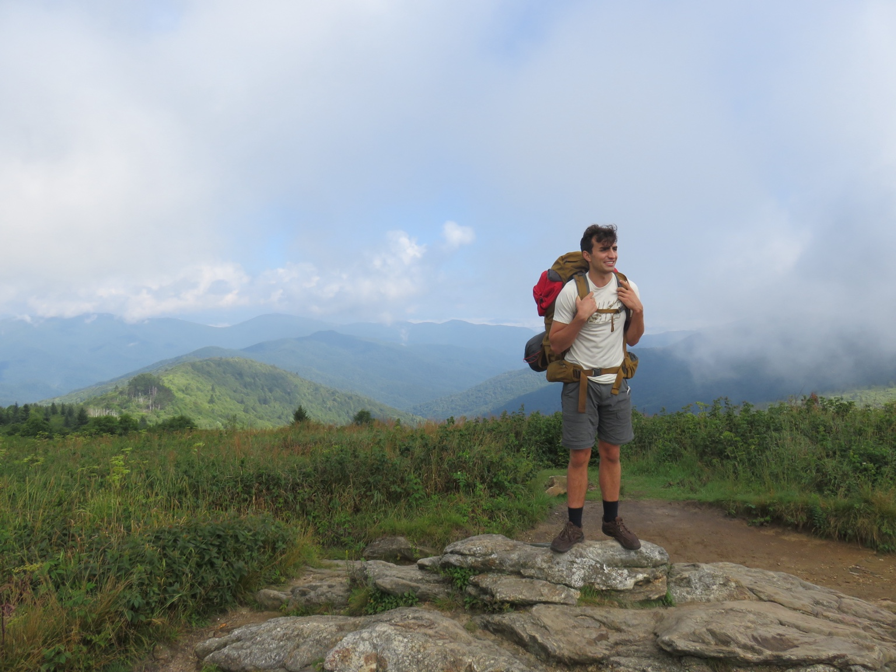

About Me

I grew up in western North Carolina with a large, passionate family. A good day with friends might include a summer morning by the lake or a winter night snowboarding.
My favorite board game is Dune, and my favorite book is also… Dune.
What I’ve been enjoying recently
Recently, I have been upset that you can’t prove Newton’s third law and excited about learning the piano. Sitting down for ten minutes at a time when I get the chance always brings me joy, no matter how many times I play “Jingle Bells.”
Slowly but surely, I’ve been reading The Hitchhiker’s Guide to the Galaxy, and I just finished playing Clair Obscur: Expedition 33.
A fond childhood memory
One of my favorite “scientific” memories was when I first discovered that the windmill I made in science class functioned as a fan when you connected it to a battery. I then went to seek out a larger battery to make it spin faster. The next logical step was to connect it to the wall.
As a child and an electrical novice, I felt this was a suitable power source for a 5-watt motor. By using a desk lamp as a switch for my windmill, I managed to turn off the overhead lights.
Why engineering
To me, science lets us see behind the curtain, and engineering lets us change what is possible. In The Lord of the Rings, Tolkien writes:
“How could they hope to reach Rivendell on foot, pursued by mounted enemies? They might as well set out for the Moon.”
My favorite thing about this quote is that it was written before humans set out for the Moon.
Something I’ve learned about learning
I’ve learned that it often isn’t until I’ve done something that I have truly learned it. While this has taught me the value of experience, it has also helped show me that I shouldn’t limit myself because something seems daunting.